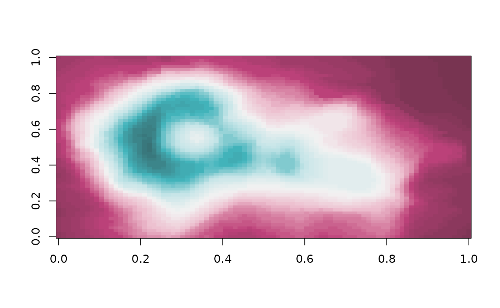
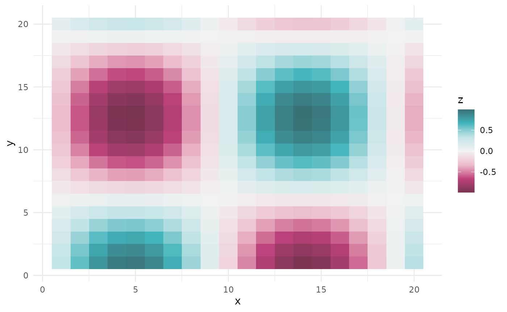

get-started.Rmd
library(stadlColorPaletteR)The package is built on five STADL brand colors. They form three hue families: raspberry, mustard (with its darker partner olive), and turquoise (with its darker partner petrol).
Every base color is extended into a tint/shade scale with the steps
50, 100, 200, ..., 900. Step 500 is exactly
the brand color. Lower steps are mixed towards white (tints) and higher
steps towards a soft black (shades). Mixing is done in the perceptual
CIE Lab color space.
# the five brand colors
stadl_colors()
#> raspberry mustard olive turquoise petrol
#> "#BE427B" "#BEA742" "#85752E" "#42B6BE" "#2E7F85"
# a light tint and a dark shade of raspberry
stadl_colors("raspberry", c(100, 700))
#> raspberry_100 raspberry_700
#> "#F6DDE5" "#783451"
# the full table
stadl_shade_table
#> # A tibble: 50 × 3
#> color step hex
#> <chr> <int> <chr>
#> 1 raspberry 50 #FBF0F3
#> 2 raspberry 100 #F6DDE5
#> 3 raspberry 200 #ECBCCD
#> 4 raspberry 300 #E099B4
#> 5 raspberry 400 #D17298
#> 6 raspberry 500 #BE427B
#> 7 raspberry 600 #9A3B65
#> 8 raspberry 700 #783451
#> 9 raspberry 800 #5A2D3F
#> 10 raspberry 900 #412630
#> # ℹ 40 more rowsstadl_palettes contains named palettes built from the
tint/shade scale:
raspberry, mustard
(ends in olive), turquoise (ends in petrol),
olive, petrol and a neutral
grey.raspberry_turquoise, raspberry_petrol,
mustard_petrol and olive_turquoise.stadl_pal() returns any number of colors from a palette
as a plain vector of hex codes. That works everywhere:
ggplot2::scale_*_manual(),
plotly::plot_ly(colors = ...) or base R graphics.
stadl_palette_names()
#> [1] "raspberry" "mustard" "turquoise"
#> [4] "olive" "petrol" "grey"
#> [7] "raspberry_turquoise" "raspberry_petrol" "mustard_petrol"
#> [10] "olive_turquoise"
stadl_palette_names("diverging")
#> [1] "raspberry_turquoise" "raspberry_petrol" "mustard_petrol"
#> [4] "olive_turquoise"
# anchor colors of a palette
stadl_pal("turquoise")
#> [1] "#F1F9F9" "#C2E4E7" "#7AC7CD" "#42B6BE" "#2E7F85" "#274143"
# 7 interpolated colors, dark to light
stadl_pal("raspberry", n = 7, reverse = TRUE)
#> [1] "#412630" "#6F324B" "#A63E6D" "#C85B89" "#DB8BA9" "#EFC5D3" "#FBF0F3"
# a palette function, e.g. for base R graphics
pal <- stadl_pal_fun("raspberry_turquoise")
image(volcano, col = pal(64))
scale_colour_stadl() / scale_color_stadl()
and scale_fill_stadl() work for continuous data (the
default) and, with discrete = TRUE, for categorical data.
For diverging palettes the neutral middle color is placed at
midpoint (default 0).
if (requireNamespace("ggplot2", quietly = TRUE)) {
library(ggplot2)
# categorical data
ggplot(iris, aes(Sepal.Width, Sepal.Length, colour = Species)) +
geom_point(size = 2) +
scale_colour_stadl("turquoise", discrete = TRUE) +
theme_minimal()
# continuous data, sequential palette
ggplot(faithfuld, aes(waiting, eruptions, fill = density)) +
geom_raster() +
scale_fill_stadl("raspberry") +
theme_minimal()
# continuous data around a center, diverging palette
df <- expand.grid(x = 1:20, y = 1:20)
df$z <- with(df, sin(x / 3) * cos(y / 4))
ggplot(df, aes(x, y, fill = z)) +
geom_tile() +
scale_fill_stadl("raspberry_turquoise", midpoint = 0) +
theme_minimal()
}
For discrete or continuous color mappings in plotly,
pass a vector from stadl_pal() to colors.
Traces that take a colorscale (heatmaps, contours,
surfaces, markers) need stadl_colorscale().
stadl_colorscale("turquoise", n = 5)
#> [[1]]
#> [[1]][[1]]
#> [1] 0
#>
#> [[1]][[2]]
#> [1] "#F1F9F9"
#>
#>
#> [[2]]
#> [[2]][[1]]
#> [1] 0.25
#>
#> [[2]][[2]]
#> [1] "#B1DDE0"
#>
#>
#> [[3]]
#> [[3]][[1]]
#> [1] 0.5
#>
#> [[3]][[2]]
#> [1] "#61BFC5"
#>
#>
#> [[4]]
#> [[4]][[1]]
#> [1] 0.75
#>
#> [[4]][[2]]
#> [1] "#338C93"
#>
#>
#> [[5]]
#> [[5]][[1]]
#> [1] 1
#>
#> [[5]][[2]]
#> [1] "#274143"
if (requireNamespace("plotly", quietly = TRUE)) {
# heatmap with a sequential colorscale
plotly::plot_ly(z = volcano, type = "heatmap",
colorscale = stadl_colorscale("raspberry"))
# discrete colors
plotly::plot_ly(iris, x = ~Sepal.Width, y = ~Sepal.Length,
color = ~Species, colors = stadl_colors(),
type = "scatter", mode = "markers")
# continuous color mapping
plotly::plot_ly(iris, x = ~Sepal.Width, y = ~Sepal.Length,
color = ~Petal.Length, colors = stadl_pal("turquoise"),
type = "scatter", mode = "markers")
}The functions below build palettes from any table of colors with the
columns color_names and hex_code. The package
includes the STADL colors as such a table in
inst/mycolors.csv.
datafile <- system.file("mycolors.csv",
package = "stadlColorPaletteR")
mycolors <- read.csv(datafile)
get_color_hex_code("raspberry", base_colors = mycolors)
#> [1] "#BE427B"
datafile <- system.file("mycolors.csv",
package = "stadlColorPaletteR")
mycolors <- read.csv(datafile)
# combinations with 2 colors
generate_colors_to_interpolate(mycolors, 2)
#> $pal1
#> [1] "#BE427B" "#BEA742"
#>
#> $pal2
#> [1] "#BE427B" "#85752E"
#>
#> $pal3
#> [1] "#BE427B" "#42B6BE"
#>
#> $pal4
#> [1] "#BE427B" "#2E7F85"
#>
#> $pal5
#> [1] "#BEA742" "#85752E"
#>
#> $pal6
#> [1] "#BEA742" "#42B6BE"
#>
#> $pal7
#> [1] "#BEA742" "#2E7F85"
#>
#> $pal8
#> [1] "#85752E" "#42B6BE"
#>
#> $pal9
#> [1] "#85752E" "#2E7F85"
#>
#> $pal10
#> [1] "#42B6BE" "#2E7F85"
# combinations with all colors
generate_colors_to_interpolate(mycolors, nrow(mycolors))
#> $pal1
#> [1] "#BE427B" "#BEA742" "#85752E" "#42B6BE" "#2E7F85"
datafile <- system.file("mycolors.csv",
package = "stadlColorPaletteR")
mycolors <- read.csv(datafile)
# combinations with 2 colors
base_cols <- generate_colors_to_interpolate(mycolors, 2)
# interpolate first element of base_cols
mycolors_interpolated <- color_palette(
colors_to_interpolate = "pal1",
base_colors_set = base_cols
)
mycolors_interpolated(5)
#> [1] "#BE427B" "#BE5B6C" "#BE745E" "#BE8D50" "#BEA742"